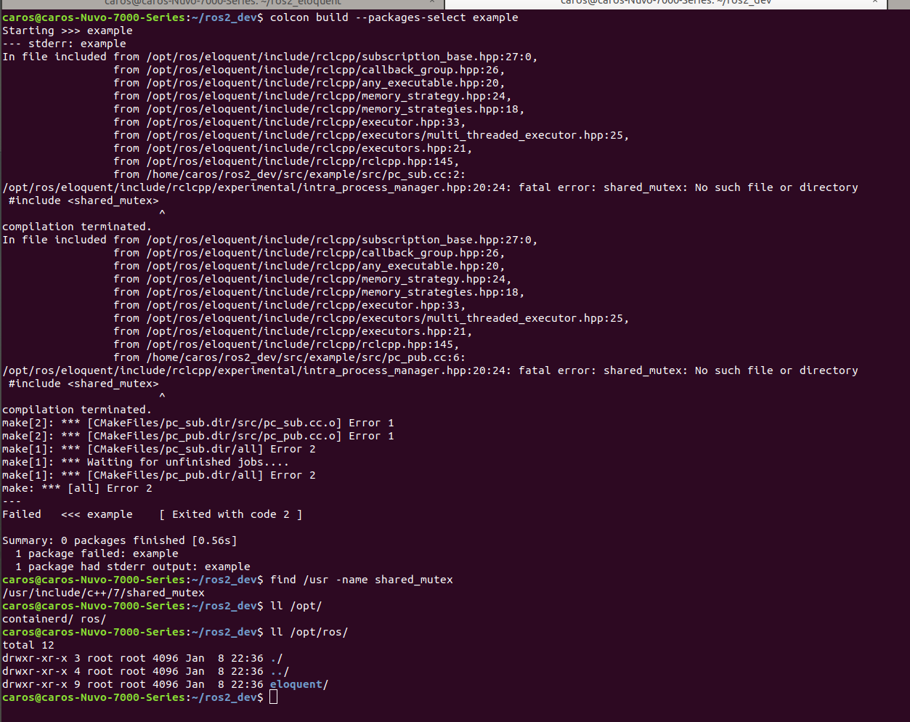

Debug Dev Final Neolix Note¶
about code¶
Eigen相关¶
- 数据类型是否一致
- eigen版本是否兼容
/usr/include/eigen3/Eigen/scr/Core/util/Macros.hfind_package(Eigen3 3.3 REQUIRED) #default version code search dir:"/usr/lib/cmake/eigen"编译ceres时如果使用某一版本的eigen, 编译后install时cmake相关信息会安装到/usr/local/lib/cmake/Ceres/CeresConfig.cmake，里面包含ceres使用的eigen当前版本信息 - 内存对齐问题 Eigen库数据结构内存对齐问题,EIGEN_MAKE_ALIGNED_OPERATOR_NEW
相关头文件缺失问题¶
error: 'function' in namespace 'std' does not name a template type解决：文件内添加
#include <functional>即可
linux系统环境相关¶
compiler¶
gcc g++ clang llvm
linux源相关¶
/etc/apt/sources.list(一般用阿里或中科院即可)
- Desc:
add-apt-repository: command not found1 2
apt-get install software-properties-common apt-get install python-software-properties - Desc:
SECURITY: URL redirect target contains control characters, rejecting. [IP: 6.....sudo apt-get update遇到的失败问题,缺少相关源导致 - e.g 缺少ros源导致ros的package安装失败
sudo apt-get install -y ros-kinetic-navigation -
solution:
/etc/apt/sources.list中加入ros的源，如deb https://mirrors.ustc.edu.cn/ros/ubuntu/ bionic main即可(ps:ubuntu16为deb http:...，而ubuntu18为deb https:...) -
e.g
1 2 3 4 5 6 7 8 9 10 11 12 13 14 15 16 17 18 19 20 21 22
#guokeda deb https://mirrors.ustc.edu.cn/ubuntu/ jammy main restricted universe multiverse deb-src https://mirrors.ustc.edu.cn/ubuntu/ jammy main restricted universe multiverse deb https://mirrors.ustc.edu.cn/ubuntu/ jammy-updates main restricted universe multiverse deb-src https://mirrors.ustc.edu.cn/ubuntu/ jammy-updates main restricted universe multiverse deb https://mirrors.ustc.edu.cn/ubuntu/ jammy-backports main restricted universe multiverse deb-src https://mirrors.ustc.edu.cn/ubuntu/ jammy-backports main restricted universe multiverse deb https://mirrors.ustc.edu.cn/ubuntu/ jammy-security main restricted universe multiverse deb-src https://mirrors.ustc.edu.cn/ubuntu/ jammy-security main restricted universe multiverse deb https://mirrors.ustc.edu.cn/ubuntu/ jammy-proposed main restricted universe multiverse deb-src https://mirrors.ustc.edu.cn/ubuntu/ jammy-proposed main restricted universe multiverse #ali deb http://mirrors.aliyun.com/ubuntu/ codename main restricted universe multiverse deb-src http://mirrors.aliyun.com/ubuntu/ codename main restricted universe multiverse deb http://mirrors.aliyun.com/ubuntu/ codename-security main restricted universe multiverse deb-src http://mirrors.aliyun.com/ubuntu/ codename-security main restricted universe multiverse deb http://mirrors.aliyun.com/ubuntu/ codename-updates main restricted universe multiverse deb-src http://mirrors.aliyun.com/ubuntu/ codename-updates main restricted universe multiverse deb http://mirrors.aliyun.com/ubuntu/ codename-proposed main restricted universe multiverse deb-src http://mirrors.aliyun.com/ubuntu/ codename-proposed main restricted universe multiverse deb http://mirrors.aliyun.com/ubuntu/ codename-backports main restricted universe multiverse deb-src http://mirrors.aliyun.com/ubuntu/ codename-backports main restricted universemultiverse
关于编译器(g++版本差异引起的编译问题)¶
和不同版本的Eigen关系很大,在内存对齐方面
sudo apt install g++-4.8g++4.8
problem¶
使用package的方式安装ROS2时，编译器为g++４.8，而ROS2中代码实际依赖g++7. 因此在编译ROS2节点时无法找到g++７的依赖

solution¶
修改默认使用g++-７,然后重新安装ROS2 然后即使装完ROS2后把默认编译器改回g++-4.8,在编译ROS2节点时也可以找到g++７的依赖
1 2 3 4 5 6 7 8 9 10 11 | |
c++库相关¶
检查c++库相关信息¶
1 2 3 4 5 6 7 8 9 10 11 12 13 14 15 | |
找不到依赖库常见编译报错¶
- undefined reference to symbol error adding symbols: DSO missing from command line
没有找到或没有添加依赖库
1 2 3
#未找到依赖库或未添加依赖库 g++ -std=c++11 test_ssl.cpp -o test -lboost_system -lpthread -ltbb #后面直接追加即可 #CMakeLists.txt中target_link_libraries里面加类似 -lboost_system -lpthread -ltbb 即可 - Poco exception = libsemantic_map.so: cannot open shared object file: No such file or directory)
OR
./build/src/lidar_map_creator: error while loading shared libraries: libdata_parser.so: cannot open shared object file: No such file or directory运行时不能加载库的问题，很多时候需要设置lib库环境变量，目的是为了指路
1 2 3 4
#通常setup.bash中添加export LD_LIBRARY_PATH=${LD_LIBRARY_PATH}:/$ {path} export LD_LIBRARY_PATH=${LD_LIBRARY_PATH}:/path1/lib:/path2/lib #查看当前环境变量 echo $LD_LIBRARY_PATHenv | grep LD查看当前环境变量LD_LIBRARY_PATH的目录有哪些
找到依赖库依旧无法编译通过的原因¶
- 依赖库版本不正确
- 依赖库编译的环境不同
e.g: 比如ubuntu18下代码需要依赖protobuf3.5,但只能依赖Ubuntu18下编译的protobuf3.5的库,不能依赖Ubuntu14下编译的protobuf3.5依赖库
- e.g:
symbol lookup error,undefined symbol _ZN3g2o30OptimizationAlgorithmLevenberg1 2 3 4 5 6 7
#cmd:ldd编写的代码，可看到程序所使用依赖库的情况 ldd build/bin/test_optimize #output:显示类似 libg2o_core.so => /usr/local/lib/libg2o_core.so (0x00007f0e966ef000) #reason: g2o安装到/usr/local目录，但是/opt/ros/melodic里面也有g2o #solution: 删除或将ros下的g2o更改即可
找到依赖库依-但程序启动常见报错¶
- 找到头文件和依赖库:但找到的是其他同名的头文件或者库文件
symbol lookup error:**** undefined symbol"_ZN7autobot7mapping22PointCloudSegmentationC1ERKNS0_18SegmentationConfigE"
c++filt _ZN7autobot7mapping22PointCloudSegmentationC1ERKNS0_18SegmentationConfigE查看具体接口
1 2 | |
FAQ:常用第三方库引用方法¶
undefined reference to lidar_fusion::Transform::MatrixFromFile(std::__cxx11::basic_string...- problems:
找不到类Transform方法实现的库文件 -
solution:
1 2 3 4 5
####编译出错通常就是缺乏依赖的源文件，运行出错就是依赖库路径问题，通过export LD_LIBRARY_PATH=<lib>解决 #CMakeLists.txt中加入Transform的实现文件 add_executable(lidar_trans src/lidar_trans.cc src/transform.cc) ####库文件和路径都没问题，但是在找的时候出现了奇异性，这是由于函数或者函数内的变量定义在多个文件和库里面出现重复 类似navinet的client里的frame_io用的变量定义同时出现在用到的loc_define.h和client_define.h里面！！！！ -
threads
- problems:
undefined reference to symbol 'pthread_mutexattr_settype@@GLIBC_2.2.5 -
solution: >find_package(Threads) target_link_libraries(${CMAKE_THREAD_LIBS_INIT})
-
undefined reference to shm_opentarget_link_libraries(-lrt)
- boost:
/usr/include/boost/math/constants/constants.hpp: In static member function 'static constexpr T boost::math::constants::detail::constant_third_pi<T>::get(const mpl_::int_<5>&)': /usr/include/boost/math/constants/constants.hpp:274:3: error: unable to find numeric literal operator 'operator"" Q' BOOST_DEFINE_MATH_CONSTANT(third_pi, 1.047197551196597746154214461093167628e+00, "1.04719755119659774615421446109316762806572313312503527365831486410260546876206966620934494178070568932738269550e+00")CMakeLists.txt中加入
set(CMAKE_CXX_FLAGS "${CMAKE_CXX_FLAGS} -fext-numeric-literals -O2")即可
FAQ:常用第三方库的安装¶
- metis
1 2 3 4 5 6
#1. 下载 http://glaros.dtc.umn.edu/gkhome/metis/metis/overview #2. 修改文件 include/metis.h 中IDXTYPEWIDTH和REALTYPEWIDTH为当前系统的位数 make config #无须建立build文件夹 make #make后生成build,内含Linux-x86_64或者Linux-x86_32 sudo make install
弱智问题¶
- 关于main函数:
main函数不能在名称空间里面
1 2 3 4 5 6
/usr/lib/gcc/x86_64-linux-gnu/7/../../../x86_64-linux-gnu/Scrt1.o: In function `_start': (.text+0x20): undefined reference to `main' collect2: error: ld returned 1 exit status add_executable(lidar_matching nodes/lidar_localization/ceres_optimizer.cpp) #且main函数不能在名称空间里面 - 关于模板函数
1 2 3 4 5 6 7 8 9 10 11 12 13 14 15 16 17
//.h file template <typename T> bool DumpPCDFile(const std::string output_file, const typename pcl::PointCloud<T>::Ptr cloud); //.cc file bool DumpPCDFile(const std::string output_file, const typename pcl::PointCloud<T>::Ptr cloud) { //... } //实例化形式: template RETURN_TYPE FUNC_NAME<example_type>([example_type]); template bool DumpPCDFile<pcl::PointXYZI>( const std::string output_file, const typename pcl::PointCloud<pcl::PointXYZI>::Ptr cloud); template bool DumpPCDFile<velodyne::PointXYZIT>( const std::string output_file, const typename pcl::PointCloud<velodyne::PointXYZIT>::Ptr cloud);